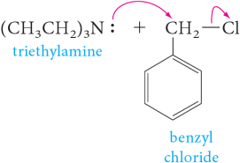

Amines
Carbon, hydrogen, and oxygen are the three most common elements in organic compounds. Because of the wide distribution of amines in the biological world, nitrogen is the fourth most common element in organic compounds. The lone pair of electrons on the nitrogen of amines is a powerful electron source, so the most important chemical properties of amines are their basicity and nucleophilicity.
Amines are derivatives of ammonia in which one or more hydrogens are replaced by alkyl or aryl groups. Amines are classifi ed as primary, secondary, or tertiary, depending on the number of carbon atoms bonded directly to nitrogen (Section 1.3B).
| CH3−NH2 Methylamine (a 1° amine) | CH3−N(CH3)2 Dimethylamine (a 2° amine) | :N(CH3)3 Trimethylamine (a 3° amine) |
Amines are further divided into aliphatic and aromatic amines. In an aliphatic amine, all carbons bonded to nitrogen are derived from alkyl groups; in an aromatic amine, one or more of the groups bonded to nitrogen are aryl groups.
(a 1° aromatic amine)
(a 2° aromatic amine)
An amine in which the nitrogen atom is part of a ring is classified as a heterocyclic amine. When the nitrogen is part of an aromatic ring (Section 21.2D), the amine is classified as a heterocyclic aromatic amine. Following are structural formulas for two heterocyclic aliphatic amines and two heterocyclic aromatic amines.
(heterocyclic aliphatic amine)

(heterocyclic aliphatic amine)

(heterocyclic aromatic amine)

(heterocyclic aromatic amine)
Piperidines, like cyclohexanes, adopt a preferred chair conformation, where both N-hydrogen and N-alkyls take up equatorial conformations, though in the former case the equatorial isomer is favoured by only a small margin. This preference for the larger group being in an equatorial position is analogous to the effects seen in pyrans and cyclohexanes.
Nomenclature
Systematic Names
Systematic names for aliphatic amines are derived just as they are for alcohols. The suffix -e of the parent alkane is dropped and is replaced by -amine.
H2N−(CH2)6−NH2
1,6-Hexanediamine
IUPAC nomenclature retains the common name aniline for C6H5NH2, the simplest aromatic amine. Its simple derivatives are named using the prefixes o-, m-, and p-, or numbers to locate substituents. Several derivatives of aniline have common names that are still widely used. Among these are toluidine for a methyl-substituted aniline and anisidine for a methoxyl-substituted aniline.
(p-Nitroaniline)
(p-Toluidine)
(m-Anisidine)
Secondary and tertiary amines are commonly named as N-substituted primary amines. For unsymmetrical amines, the largest group is taken as the parent amine; then the smaller group(s) bonded to nitrogen are named, and their location is indicated by the prefix N (indicating that they are bonded to nitrogen).
Following are names and structural formulas for four heterocyclic aromatic amines, the common names of which have been retained in the IUPAC system.


Among the various functional groups discussed in this text, the −NH2 group is one of the lowest in precedence (Table 16.1). The following compounds each contain a functional group of higher precedence than the amino group, and accordingly, the amino group is indicated by the prefix amino.
H2N−(CH2)2−OH
2-Aminoethanol
Common Names
Common names for most aliphatic amines are derived by listing the alkyl groups bonded to nitrogen in alphabetical order in one word ending in the suffix -amine, that is, they are named as alkylamines.
CH3NH2

Et3N
Triethylamine
Quaternary (4°) ammonium ion
An ion containing a nitrogen atom bonded to any combination of four alkyl or aryl groups is classified as a quaternary (4°) ammonium ion. Compounds containing such ions have properties characteristic of salts. The compound is named as a salt of the corresponding amine. The ending -amine (or -aniline, pyridine, and so on) is replaced by -ammonium (or anilinium, pyridinium, and so on), and the name of the anion is added.
Cetylpyridinium chloride is used as a topical antiseptic and disinfectant.
| Me4N+Cl– Tetramethylammonium chloride | Et3NH+Cl– Triethylammonium chloride | Pyridinium acetate | Tetradecylpyridinium chloride (Cetylpyridinium chloride) | Ph−CH2N+Me3OH– Benzyltrimethylammonium hydroxide |
Tertiary amines react with primary or sendondary alkyl halides by an SN2 mechanism. The product are quaternary ammonium salts, in which all four hydrogens of the ammonium are replaced by organic groups. For example,
|  | ⟶ |  |
Quaternaty ammonium compounds are important in biological processes. One of the most common natural quaternaty ammonium ions is choline, which is present in phospholipids

Choline is not only involved in various metabolic processes, but is also the precursor of acetylcholine, a compound that plays a key role in the transmission of nerve impulses. The mushroom Amanita muscaria contains the deadly neurotoxin muscarine, which structurally resembles acetylcholine and probably interferes with the function of this neurotrasmitter.